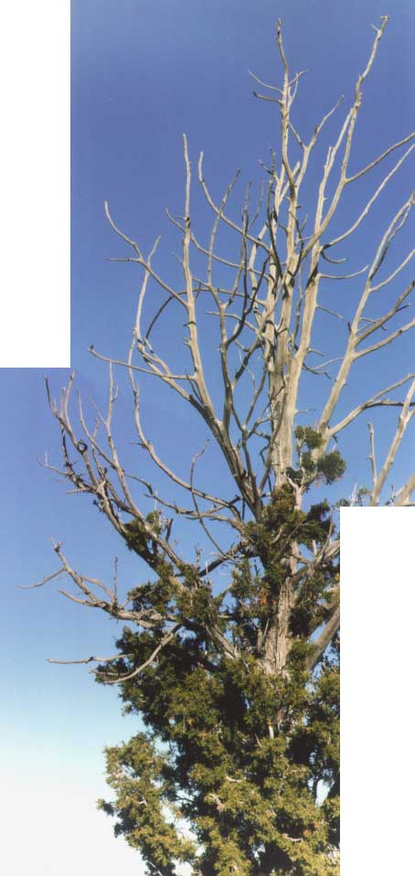

Otra Banda - Home of Urban Eagle

Some old pics from March-April, 98:
Cuesta Navajo and Mesa Alta after a snow
Mesa Corral and Mesa del Camino after a snow
"The Throne" (Mesa Pinabetosa) SW of us
Cerro Pedernal sunrise
A snowstorm rolls across the Piedra Lumbre
Cerro Pedernal
Moving in-1
Moving in-2
Moving in-3
Moving in-4
Home sweet home after a 'dusting'
Looking at our trailer from the top of the property
View from our new front door
View NW-NE in spring
Views from around the area:
Some local neighbors (not!)
A scene from the 'hood
North of us by Ghost Ranch
More scenery by Ghost Ranch
Its a beaut!
Red Rocks area on Hwy 84
Closer by Ghost Ranch
Near Copper Canyon and Abiquiu
Nifty scenery
Old Adobe Church at Mendenales
More nifty scenery
Still more nifty scenery
Hwy 84, on the way to Abiquiu
Views from Otra Banda ("The Other Side"):
Panorama around Otra Banda
The left and right edges are South, the car is to the East,
Karen and Steve are in the North, and the sun in the clouds
is West.
QuickTime VR version of the panorama
Looking to the North
Beautiful downtown Youngsville
Front Yard of future guest house
View to the Northwest from the (eventually) guest house
Heading West! The property line is just above my head.
Southwest from the guest house. Is this where the shower goes?
Masters of all we survey...
Pretty good place for a patio, I reckon.
All that's missing is a fresh cup of coffee.
The dynamic duo, R & K.
It's ours!
The Urban Eagles: Katy, Rick, Sam, Karen, Steve, and Jake
Email: rick at urbaneagle.com